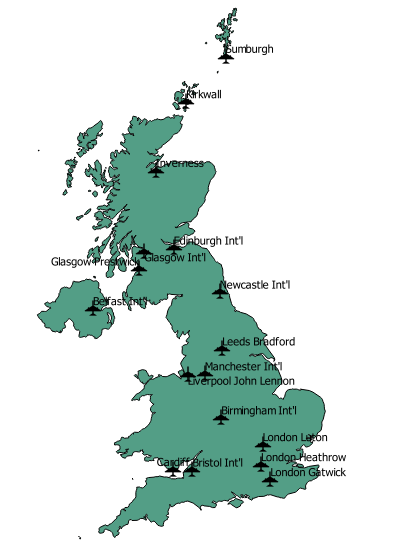

New stuff on GIS
Free and open source software for geospatial
Created by Markus Dornhofer / @bartholomaeuz
markus.dornhofer@fh-joanneum.at
How a single person develop such app?
- free and open tools
- open data (geo,wind)
- open standards
- has to be clever person...
Overview
- Free and open source for geospatial
- INSPIRE Directive
- OSGeo Presentation
- OpenStreetMap
- Examples with some FOSS4G tools
- Specific Questions
Open Geospatial Consortium (OGC)
- developed standards like WMS,WMTS,WFS,..
- approx 500 members
- goverment agencies, universities and companies
Inspire Directive (EU)
- Infrastructure for Spatial Information
- launched May 2007
- Support community environmental policies
QGIS (Vector)
Natural Earth Dataset

QGIS (Vector)
Natural Earth Dataset (states provinces)
Filter: geonunit = Scotland
QGIS (Raster)
HGT: no style
QGIS (Raster)
Style: Pseudo color (RDYlGn) -> Classify
QGIS (Raster)
Change Projection WGS84 -> UTM (EPSG:4326 -> 32633)
cos(lat)=cos(~45°)=0.7
QGIS (Raster)
Grass: r.shaded.relief
QGIS (Raster)
Grass: r.contour.step (100)
QGIS (Raster)
Grass: r.lake.layer
QGIS (Raster)
Grass: r.slope
ZyGRIB
Wind data (offine)
TileMile
Style GeoData (OSM)